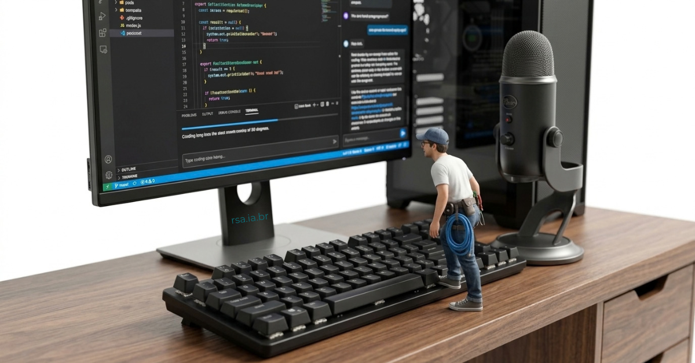
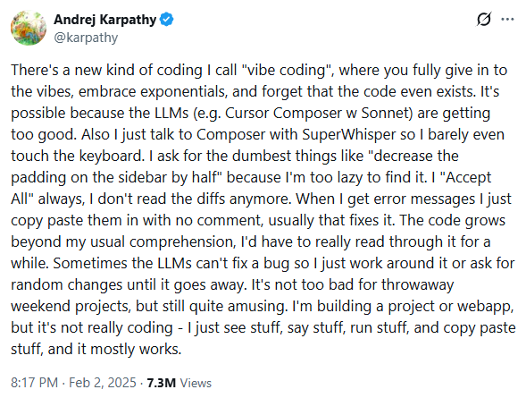
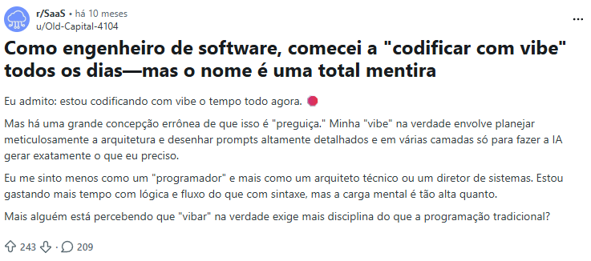
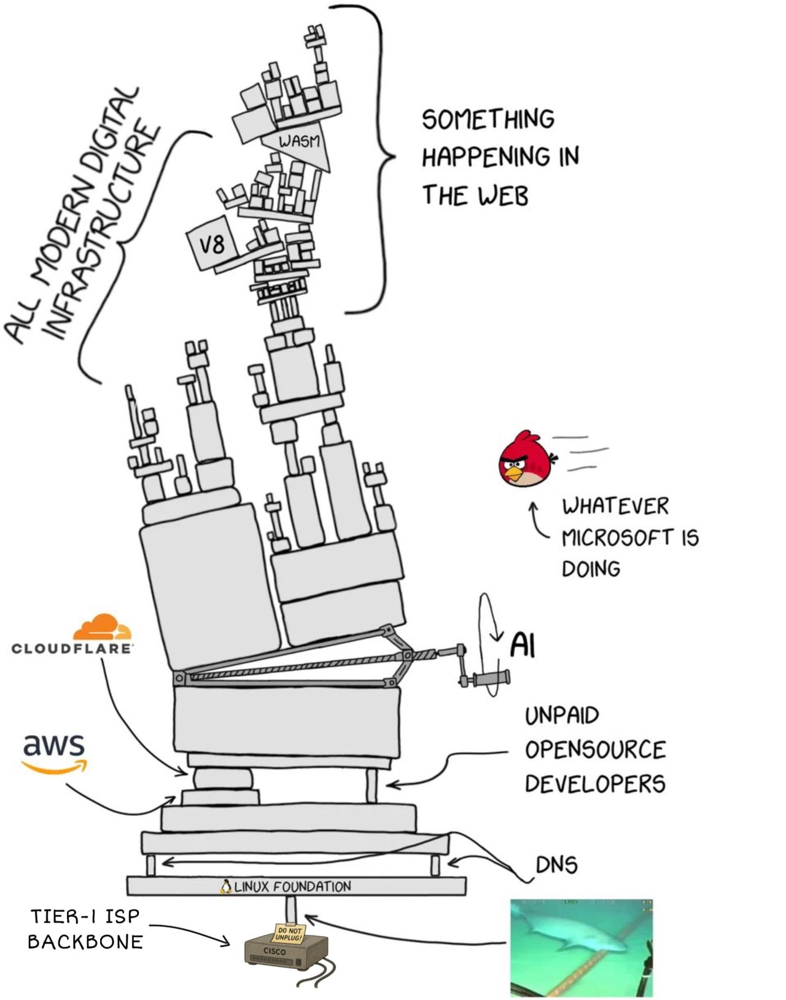

O termo vibe coding foi cunhado no dia 02 de fevereiro de 2025, pelo executivo e pesquisador Andrej Karpathy, nesta publicação no X:

Tradução:
Existe um novo tipo de programação que eu chamo de "vibe coding", em que você simplesmente se entrega completamente às vibes, abraça o crescimento exponencial e esquece que o código sequer existe. Isso é possível porque os LLMs estão ficando bons demais. Além disso, eu simplesmente converso com o Composer usando o SuperWhisper, então mal encosto no teclado. Eu peço as coisas mais banais, porque tenho preguiça demais para procurar onde isso está no código. Eu sempre clico em "Accept All" e não leio mais os diffs. Quando recebo mensagens de erro, simplesmente copio e colo o erro no Composer, sem nenhum comentário. O código vai crescendo para além do que eu consigo compreender normalmente. Às vezes, os LLMs não conseguem corrigir um bug, então eu simplesmente contorno o problema ou peço alterações aleatórias até que ele desapareça. Estou construindo um projeto ou uma aplicação web, mas isso não é exatamente programação — eu simplesmente vejo coisas, digo coisas, executo coisas e copio e colo coisas, e, na maior parte do tempo, funciona.
Destaco propositadamente as duas frases nessa tradução para seguirmos a discussão.
Vibe coding é ou não programação?
Avaliei 39 vídeos do YouTube e uma discussão no Reddit sobre a questão.

No geral, os comentários apresentam duas formas de trabalhar:
- Vibe coding puro: pedir algo genérico à IA, aceitar o código sem ler o que foi gerado e torcer para funcionar.
- Desenvolvimento assistido por IA: o método praticado por profissionais da área, no qual a IA é tratada como um "programador júnior incrivelmente rápido" que exige especificações detalhadas, supervisão e validação contínua.
Em projetos de grande magnitude, o vibe coding é uma ferramenta revolucionária para prototipagem e autonomia — classificação praticamente unânime no meio corporativo, dentre os vídeos analisados. Porém, essa classificação vem acompanhada de um alerta quanto à ingenuidade do profissional em manter o vibe software em produção no longo prazo.
Poucas imagens sobre tecnologia me marcaram tanto quanto esta representação da internet moderna. Para fins comparativos, veja a contribuição dos desenvolvedores de código aberto não remunerados (unpaid opensource developers). Entregar soluções sem remuneração pode ser considerada ingenuidade? Os comentários na publicação trazem pontos que não estão ludicamente representados, como as interferências política e corporativa.

Desde a década de 1960, alguns softwares já rodavam com código aberto, como apresentado em A Brief History of Free, Open Source Software and Its Communities. O termo open source consolidou-se na década de 1990. Um ponto interessante é que os softwares gratuitos e de código aberto surgiram como ferramenta estratégica para formar consórcios neutros, nos quais concorrentes pudessem colaborar.
Comparativamente, o vibe coding viabilizou a construção de ferramentas sob medida sem necessitar de anos de estudo técnico inicial. Profissionais de outras áreas se beneficiaram com essa redução da barreira de entrada. Seus protótipos puderam surgir e a validação de ideias tornou-se mais rápida — uma alteração drástica na concorrência e na dinâmica de trabalho.
Pesquisas indicam que mais de 50% dos profissionais de TI já constroem soluções e automações sozinhos utilizando IA, sem qualquer participação formal da área de TI. O vibe coding viabilizou soluções para gargalos operacionais com redução de tempo significativa.
A consciência dos contextos de aplicação é necessária, tanto para o open source software quanto para o vibe software. Projeto clonado gratuitamente do GitHub ou um vibe software exigirão um profissional para implementar:
- as questões de segurança, como autenticação e autorização;
- as definições das operações dentro do software para evitar conflitos;
- a capacidade de atender milhares de usuários simultaneamente;
- o funcionamento correto, sem redundância;
- o retorno consistente para o usuário;
- em um ambiente real, em produção.
Cada uma dessas implementações possui nomes técnicos próprios e, dependendo da complexidade do software, cada item pode ser responsabilidade de diferentes times. Todas essas questões são exigidas por normas técnicas para que o projeto atinja a viabilidade comercial. E, ao tomar vida, como mantê-lo em correto funcionamento? Sem dúvida, todo o ciclo de desenvolvimento do software deve ser considerado desde sua concepção. Com as fronteiras e limitações bem definidas, o "vibe coding" é então encarado como mais uma ferramenta de auxílio, e não como o único recurso de criação.
Portanto, a estrutura do projeto deve viabilizar governança, continuamente.
O que dizem profissionais renomados da área?
Linus Torvalds, criador do Linux e do Git, revelou ter aplicado vibe coding para criar uma ferramenta de visualização em Python para um projeto pessoal com pedais de guitarra. Ele apoia o uso da tecnologia para projetos de aprendizado ou protótipos, mas reforça que para sistemas sérios e de longa duração é indispensável entender o código gerado.
David Heinemeier Hansson, criador do Ruby on Rails, apoia fortemente o uso de agentes para acelerar o desenvolvimento, mas rejeita o rótulo de "vibe coder" para o trabalho sério. Ele destaca que agentes são excepcionais quando guiados com rigor e instruídos a criar testes unitários e comentários, superando a média dos programadores em disciplina quando bem direcionados.
A visão do próprio Andrej Karpathy evoluiu de um experimento descontraído para uma distinção formal entre a democratização do software e a engenharia profissional. Para Karpathy, o maior valor do vibe coding é a democratização do desenvolvimento: qualquer pessoa pode construir ferramentas funcionais em linguagem natural.
Karpathy destaca fronteiras claras em que o vibe coding puro falha ou exige cautela:
- Inadequado para código crítico de produção: aceitar código sem leitura é inviável para sistemas reais.
- IA "na coleira": agentes podem se tornar hiperativos e alterar arquivos demais. Ele recomenda passos curtos, concretos e incrementais.
- Falta de "gosto" e estética nos modelos: modelos de IA são ferramentas estatísticas eficazes, mas não possuem discernimento estético ou julgamento de produto. Cabe ao humano a liderança sobre a arquitetura e a intenção do sistema.
- O paradigma do traje do Homem de Ferro: os modelos atuais funcionam melhor como "trajes de amplificação" — o humano ajustando o nível de autonomia conforme o risco da tarefa — do que como agentes 100% autônomos.
Na virada de 2025 para 2026, Karpathy relatou uma mudança drástica na sua rotina: migrou de 20% para quase 100% de delegação da escrita de código para agentes, atuando como arquiteto de soluções.
Uma ferramenta é tão bem utilizada quanto maior for o nível de experiência do profissional que a usa.
Considerações finais
A crítica ao vibe coding possivelmente está representada na manivela da internet moderna. O impacto é maior que realizar trabalhos open source, devido a alta diversidade e quantidade de profissionais utilizando a ferramenta.
Já que é inevitável o vibe coding, surge rapidamente demanda por profissionais experientes para corrigir o vibe code, implementar corretamente e garantir manutenção e governança. Os cargos já estão surgindo como Vibe Coding Cleanup Engineer, Vibe Coding Cleanup Specialist, Vibe Coding Fixer, e suas variações. Ou seja, essa categoria profissional está rapidamente se consolidando no mercado, cujo valor da hora pode começar em US$ 25 e atingir US$ 149, como apresentado em Top 5 Vibe Coding Cleanup Engineers in the US in 2026.
Escrevi esse texto para ser um registro histórico para comparar tais informações com o real desfecho dos vibe softwares em um futuro próximo. Espero sinceramente que isso ocorra antes de o "tubarão" morder o cabo submarino.